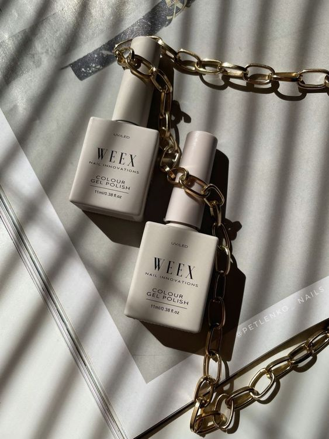

Regular Nail Polish
A traditional nail polish that provides color to the nails. It requires air drying and is easy to remove with nail polish remover.
Gel Polish

A type of nail polish that is cured under a UV or LED lamp. It offers a longer-lasting and more durable finish compared to regular nail polish.
Gel Builder Overlay
A gel-based product applied over natural nails to add strength and durability. It helps protect and enhance the natural nail.
Poly Gel Builder Overlay
A hybrid product combining the flexibility of gel and the strength of acrylic. It is applied over natural nails to provide a strong, lightweight overlay.
Soft Gel Extension
A type of nail extension made from a soft gel material. It is flexible and provides a more natural look compared to traditional acrylic or hard gel extensions.
Poly Gel Extension
An extension method that uses poly gel, which is a hybrid between gel and acrylic. It is applied over nail tips or forms to create extended nails with strength and flexibility.